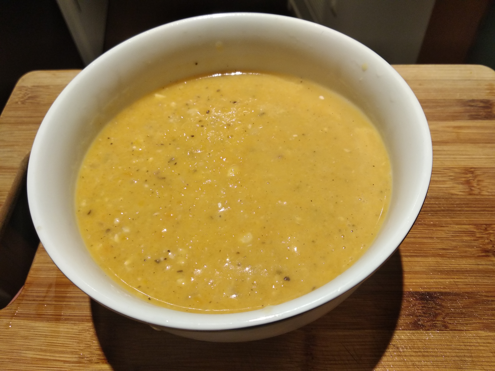
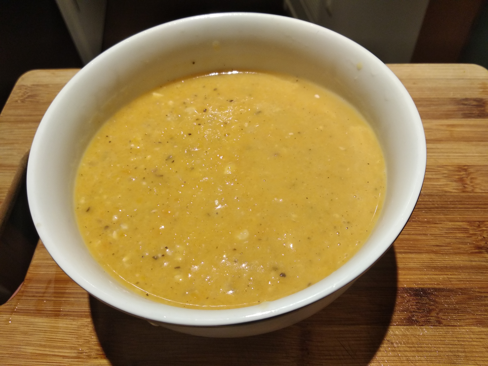

Butternut Squash Soup
 

Summary
Easy to make, spicy and healthy soup. 8 min in an instant pot. I copied it from this recipe.
Ingredients:
- 2 cups vegetable/chicken stock
- 4 cloves garlic, peeled and minced
- 1 carrot, peeled and diced
- 1 Granny Smith apple, cored and diced (or tablespoon apple cider vinegar)
- 1 medium (uncooked) butternut squash*, peeled, seeded and diced
- teaspoon of sage powder (or 1 sprig fresh sage)
- 1 white onion, diced
- 1 teaspoon salt, or more to taste
- 1⁄2 teaspoon black pepper, or more to taste
- 1⁄4 teaspoon cayenne, or more to taste
- pinch of ground cinnamon and nutmeg
- 1⁄2 cup canned (unsweetened) coconut milk
- Optional garnishes: extra coconut milk and a sprinkle of smoked paprika (or cayenne pepper)
How to make it:
- Add everything except for the coconut milk to instant pot. cook for 8 minutes.
- Add coconut milk
- Blend it into a soup. Immersion stick is the easiest but any blender/food processor will work.
Thicker Version
Add potatoe, bay leaves, yellow onion instead of white, and no cinnamon. Serve with pumpkins seeds